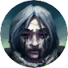

Открыть в интерактивной вики →
| Уровень | 80 |
|---|---|
| Здоровье | 16 000 |
| Мана | 10 000 |
| Выносливость | 1000 |
Команда

Дроп


Статистика

Уровень: 80
Здоровье: 16 000
Мана: 10 000
Выносливость: 10 000
Зоны атаки
Умения
| Удар кулаком Обычная атака | Бросок камнем |
Иммунитеты / особые умения
Устойчивость к рубящему урону
Локация
Приют